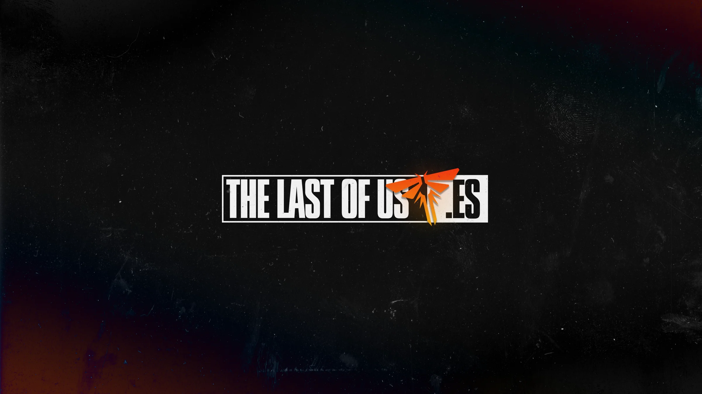
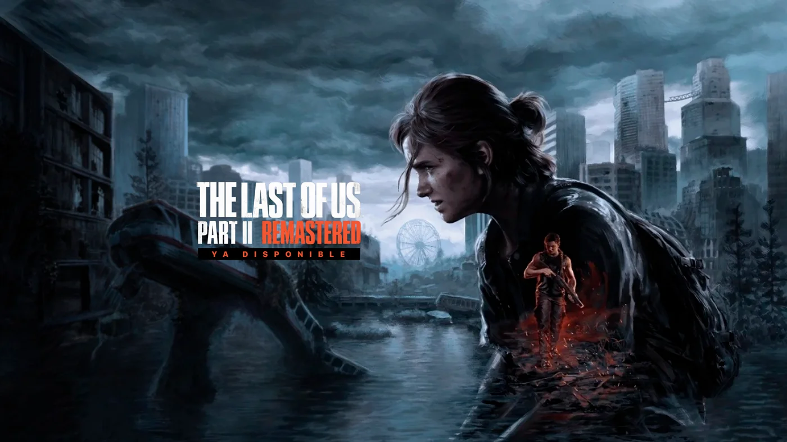
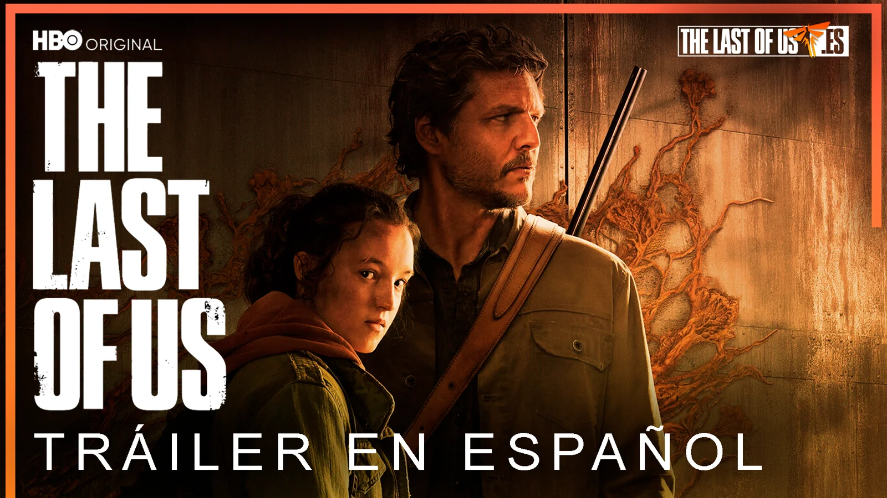
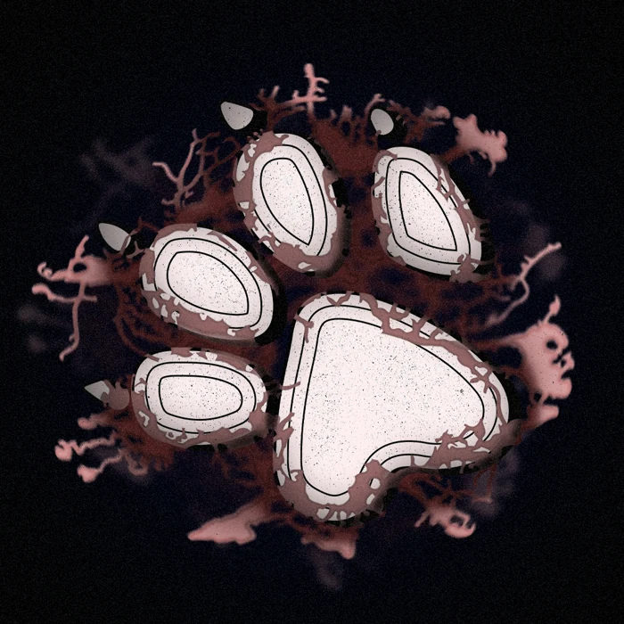
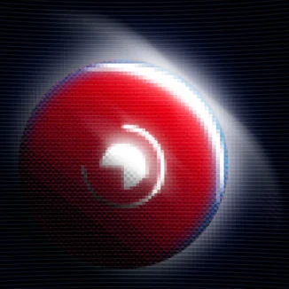
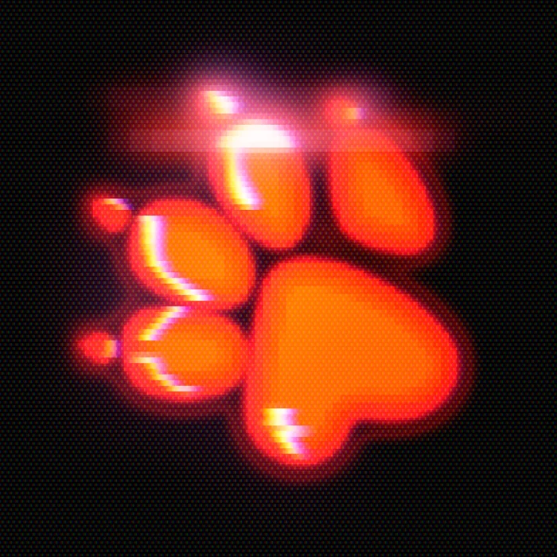
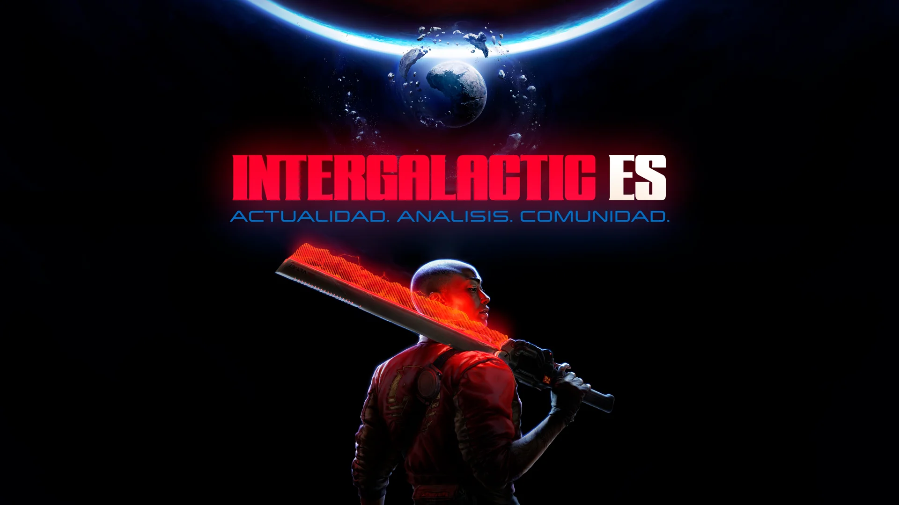

What started as a passion project became something bigger than expected. The Last of Us ES is an independent Spanish-language media brand dedicated to Naughty Dog's universe — covering news, analysis, and community around one of the most acclaimed franchises in gaming history.
I joined the project at its earliest stage and took on full creative responsibility for the brand's visual identity across all platforms. Over four years, the community grew to over 15,000 followers on Twitter and earned recognition within the official Naughty Dog fan ecosystem — including invitations to industry events.
My role covered everything from logo design and brand guidelines to social media templates, event graphics, and visual content for major game releases including The Last of Us Part I, Part II Remastered, and the announcement of Intergalactic. Every piece of content was built around a consistent visual identity that balanced the franchise's dark, cinematic aesthetic with an accessible, community-first approach. Running a media brand with real reach taught me how to work fast, stay consistent, and build something from nothing — without a budget, without a brief, and without a deadline. Just a vision and the tools to execute it.





